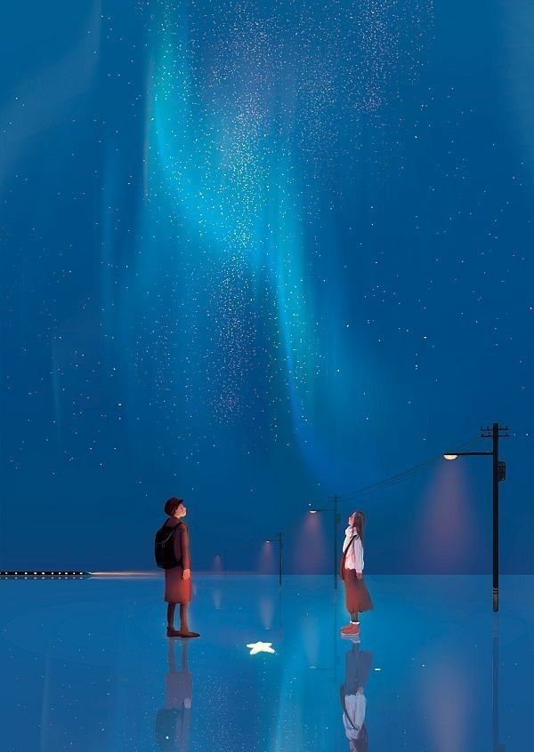
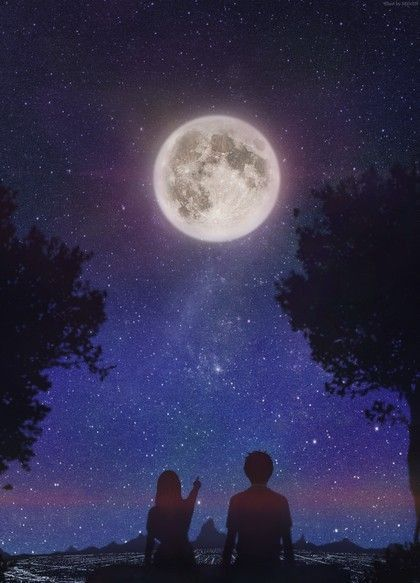

HOME
ABOUT US
STORIES
AUTHOR

Kiss Me Under The Aurora Borealis
"Kiss Me Under the Aurora Borealis" is a poignant tale set in the captivating landscapes of Iceland. Channyl and Dexter's unexpected connection unfolds through shared adventures and culminates in a transformative kiss beneath the Northern Lights. As Channyl departs, a farewell overlooking a serene lake marks the end of their Icelandic journey. However, an unforeseen tragedy casts a shadow over their anticipated reunion, turning the Northern Lights into bittersweet echoes of a love that transcended boundaries. The story explores themes of love, loss, and the enduring impact of shared moments in an enchanting land.

If Happy Ever After Did Exist
In the tranquil town of Havenridge, childhood friends Oliver and Mia navigate the complexities of love under the sea's golden hues. Mia confesses her feelings, initiating a romance that faces societal hurdles. As their relationship unfolds, fate intervenes, erasing Oliver's memories. Mia strives to rebuild their connection, leading to a bittersweet camping trip where a tragic truth emerges. Oliver bids a tearful farewell, leaving Mia with the echoes of their shared past. The story, a poignant blend of romance and tragedy, explores the enduring power of love that transcends time and memory.
The Last Half-Blooded Heiress
In the quaint town of Eldoria, Alisha Flienn Cartel's ordinary life takes an extraordinary turn when she discovers she is the heir to the vanished Heavens. Unaware of her destiny, Alisha, along with fellow heirs, embarks on a quest to restore balance to the elements—Fire, Water, Earth, and Air. Guided by mentors, the group faces the consequences of elemental chaos and confronts adversaries born from disrupted harmony. As they train, master elemental powers, and navigate treacherous landscapes, Alisha and her allies delve into ancient prophecies and hidden truths. The journey becomes a testament to unity, resilience, and the unraveling of mysteries that shape the fate of their world. "The Last Half-Blooded Heiress" is an epic tale of discovery, camaraderie, and the quest for balance in a world thrown into turmoil.
.png)